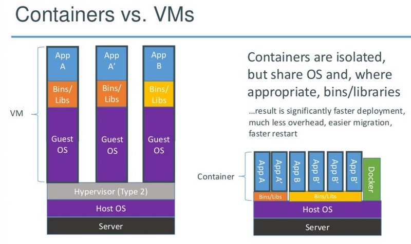
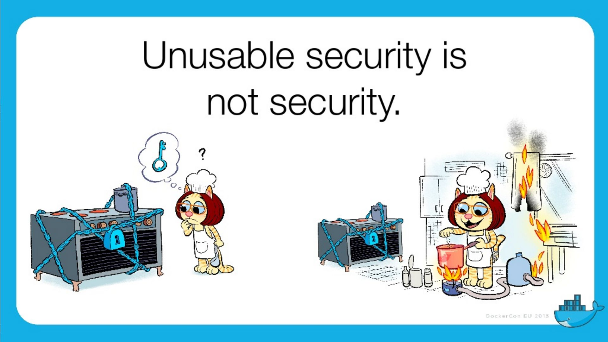

Docker en Production ? Et la Sécurité … ?
Jean-Marc Meessen
Bonjour
Jean-Marc MEESSEN
Bruxelles, Belgique
"Brol Engineer" @ Worldline-BE
(Development Infrastructure Expert)
Et vous ?
développeurs ?
Ops ?
Sécurité ?
Manager ?
Vous et Docker ?
Jamais entendu parlé ?
Quelques "Proof of Concept" ?
L’utilise tout les jours ?
En Production ?
Docker en production ?
Voilà en général la réaction…
Le problème
La popularité de Docker est le reflet du désir de moins en moins de friction.
Sa facilité d’utilisation fait qu’on néglige les vérifications et les compromis.
Et pourtant la Sécurité est importante.
Et pourquoi ?
Nos clients nous confient leurs systèmes / leurs données.
Il n’y a pas de sanctions pour les entreprises IT
seulement un coût
pas de principe "pollueur/payeur"
J’estime que nous avons une responsabilité morale de rappeler les bonnes pratiques à nos managers.
La situation de Docker

Rappel

Que cherche-t-il ?

Que cherche-t-il ?
Des données
Accéder à d’autres systèmes
Élévation de privilège

Les dangers avec Docker ?
Kernel exploits
Denial of service attack
Container breakout
Poisoned images
Compromising Secrets
Est-ce que Docker est "secure" ?
Beaucoup d’attentes, d’illusions
"Silver bullet"
positionnement de concurrents (VM, Configuration Mgt)
jalousie
Docker, Inc et la sécurité
La Sécurité (= opérabilité) est une de leur préoccupation fondamentale
Conscient de la jeunesse de la technologie
Très réactifs
Attitude positive sur l’approche



"Container do not contain !"
perception erronée du "public"
Progrès énormes en 3 ans
mais utilisable…


En particulier
Cap drop
User namespace
selinux / apparmor
Capability Drop
option du "Docker run"
vas au de la de la dichotomie root/non-root
exemple container avec NTP
docker run --cap-drop ALL --cap-add SYS_TIME ntpdUser namespace
Selinux / apparmor
profils appelés à chaque "Docker run"
permettent d’aller plus loin dans la granularité
tel programme (ex ping) n’a pas accès au réseau
#include <tunables/global>
profile docker-default flags=(attach_disconnected,mediate_deleted) {
#include <abstractions/base>
network,
capability,
file,
umount,
deny @{PROC}/{*,**^[0-9*],sys/kernel/shm*} wkx,
deny @{PROC}/sysrq-trigger rwklx,
deny mount,
deny /sys/[^f]*/** wklx,
deny /sys/f[^s]*/** wklx,
deny /sys/fs/[^c]*/** wklx,
deny /sys/fs/c[^g]*/** wklx,
}Des containers "propre" ?
Contenus malveillants
Contenus buggés ou vulnérables
Trusted Registry
Utilisation systématique de TLS
renforcement de l’identification des layers
upgrade avec la version 1.10
Notary
Système de signature d’images et de validation
vérification de l’auteur et non-altération du contenu
Protection Against Image Forgery
Protection Against Replay Attacks
Protection Against Key Compromise
Utilisation de support physique pour les clés
Yubikey 4

Nautilus
Scanner d’images Docker
Vulnérabilité (CVE check)
Validation des licences
Optimisation des images
Tests fonctionnels simplifiés
Recommendations
Recommandations
Maintenir votre host/images à jour
Cloisonner
partition disque Docker séparée
pas exploiter d’autres applis
Container dans une VM ?
Limiter les communications inter-container
logger/auditer
contrôle d’accès
Recommendations
Ne pas utiliser "priviliged" si c’est pas nécessaire
Users applicatifs dans les containers
d’où viennent mes images ? Sont elles à jour ?
permissions sur les fichiers
Conclusions
"Docker est-il 'secure' ?"
Pas plus ni moins que la porte d’un appartement
La sécurité est l’affaire de tous : DevOps + SecOps
Contact info
Twitter: @jm_meessen
Crédits photographiques
{kind=link}
{kind=link}
{kind=link}
{kind=link}
{kind=link}
Crédits photographiques - 2
Slides de la Keynote de Dockercon 2015 à Barcelone
{kind=link}
{kind=link}
{kind=link}
{kind=link}
{kind=link}